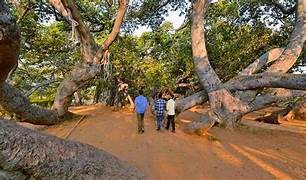

Koilkonda Fort

Koilkonda Fort is a historic hilltop fortress located about 125 km from Hyderabad in Mahabubnagar district. Built in the 16th century by Ibrahim Qutb Shah, it served as a strategic outpost of the Qutb Shahi dynasty. The fort is known for its seven majestic gates, each showcasing inscriptions and architectural details from the era. Reaching the fort involves a thrilling trek through rocky terrain, crossing a stream and ascending steep paths surrounded by boulders and thorny vegetation. Inside the fort, visitors can explore the remains of a palace, a mosque, an Idgah, a pond, and an ashurkhana dedicated to Bibi Fatima. From the summit, panoramic views of the surrounding hills and the Koilsagar reservoir offer a breathtaking experience. The fort is best visited between October and March, ideal for trekking enthusiasts and history lovers seeking adventure and solitude.
Jurala Project (Priyadarshini Jurala Dam)
.jpeg)
Priyadarshini Jurala Project, commonly known as Jurala Dam, is a significant irrigation and hydroelectric project built across the Krishna River near Mahabubnagar, Telangana. Completed in 1995, the dam stands at a height of about 40 meters with a reservoir capacity of nearly 12 TMC. It supplies water to vast agricultural lands through its left and right canal systems, supporting the livelihoods of thousands of farmers. The dam also houses a 234 MW hydroelectric power plant with six turbines, providing clean energy to the region. Jurala is a popular tourist destination, especially during the monsoon when the gates are opened, creating a spectacular view. The reservoir is home to various species of birds and fish, making it ideal for nature lovers. Visitors can also explore nearby attractions like the Ramalayam temple, Parthasaradhi temple, and a small deer park, blending natural beauty, spirituality, and engineering marvel.
Pillalamarri
Pillalamarri is a renowned 700-year-old banyan tree located around 4 km from Mahabubnagar town in Telangana. Spanning nearly 3 to 4 acres, the tree is famous for its vast canopy and countless aerial roots that resemble multiple trunks, creating a forest-like appearance. The name "Pillalamarri" comes from the Telugu words pillalu (children) and marri (banyan), referring to these many offshoots. Besides its natural grandeur, the site also features a small zoo, bird park, aquarium, and an archaeological museum showcasing regional artifacts. There is also an ancient Shiva temple relocated from Srisailam and tombs of two Sufi saints, making it a blend of nature, history, and spirituality. The area serves as a popular picnic spot, offering shade and serenity. Pillalamarri is best visited during cooler months and is open to visitors daily from morning till evening.